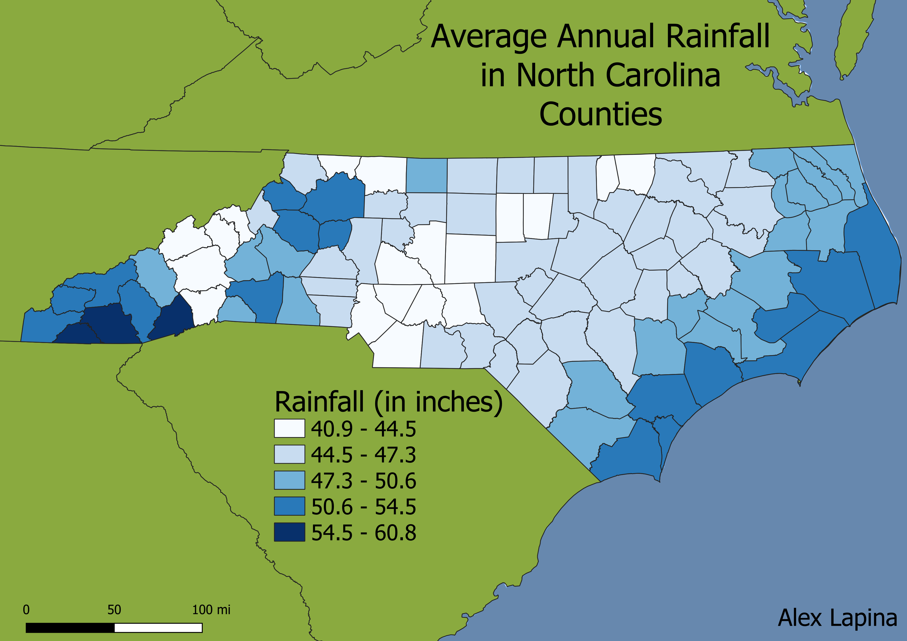

Homework 7: Make a choropleth or proportional symbol map
Alex Lapina

This map illustrates the average annual precipitation in all 100 counties of North Carolina. The data is categorized into 5 different intervals based on natural breaks. The most noticeable trend is the decrease in average rainfall as you move further away from the coast. Counties that border the Atlantic Ocean mostly fall in the range of 50.6-60.8 in, while the counties 25 miles inland fall in the range 47.3-50.6 in. Moving 50-150 miles inland there is a large cluster of counties that fall under the 44.5-47.3 in range, which makes up the largest interval containing 40 counties. Continuing to move inland into the western piedmont, the lowest interval, 40.9-44.5 in, is clearly visible. The maximum values fall in the western tip of NC in the mountains region.
Data used for this project
CSV dataset
Link to dataset